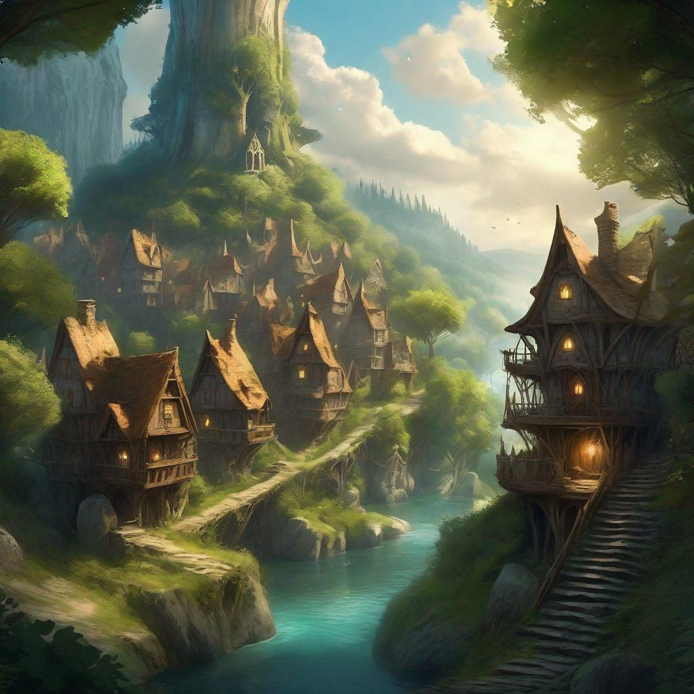
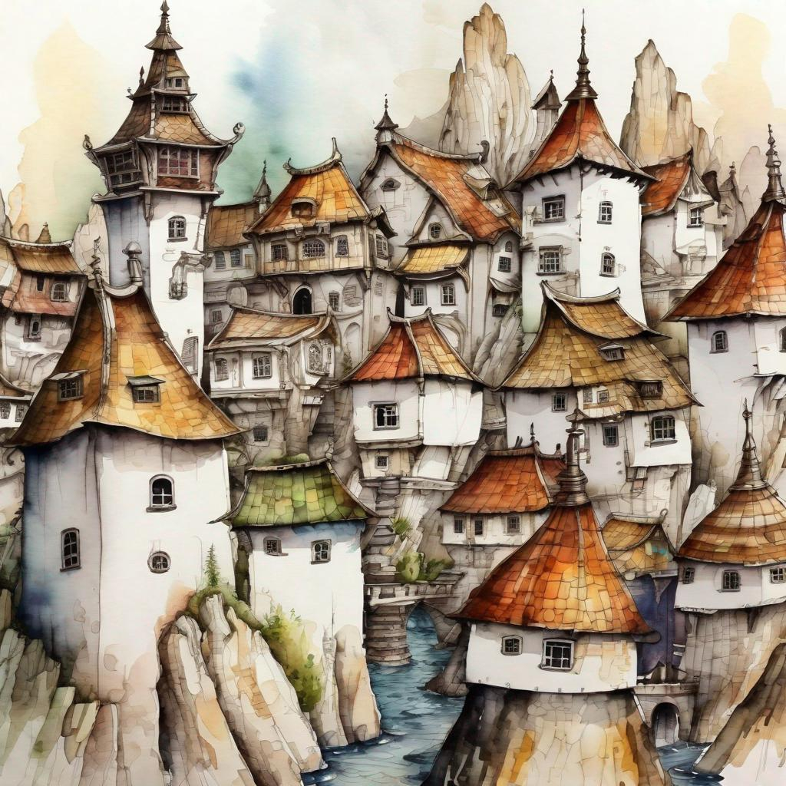

Created Thursday 12 October 2023
@home @index
Enter the immersive world of Dungeon Darts, an adventure that fuses the strategic thrill of darts with a rich, fantastical setting. In Dungeon Darts, you and your seasoned companions select your character classes, setting out on an epic odyssey. As you progress through the game, you'll encounter intricate puzzles and ever more challenging adversaries. Your ultimate test awaits: facing off against a colossal boss in the climactic fifth showdown.
In this grand adventure, cooperation is paramount. You'll need to harness your unique class abilities and wield your carefully acquired treasures judiciously. The distinguished merchants in each town stand ready to equip and assist you, offering invaluable gear and services to augment your quest.
Dungeon Darters, the realm teeters on the precipice of darkness, yearning for heroes of your mettle. Will you accept the call to vanquish the encroaching malevolence that looms over the land? Your epic journey beckons!
<<< Project Notes | Contributions | Goals | Dailys >>
Side Quests
Encounters
Treasures
Maps (on hold)
Historical
Currency and Mods
Equipment
All Enemies
All Merchants
All Activities
All Encounters
All Side Quests
All Class Abilities
All Enemy Abilities
All Terminology
Created Thursday 12 October 2023
@rules @index
!!IMPORTANT!!
!!MORE FUN!!
Primary Rules
Game Involvement
Game Progression
Dart Types
Abilities
Special States
xMods
Status Effects
Enemies
Created Thursday 12 October 2023
@rules @safety
(Direct from) https://www.safesport.co.uk/DartsSafety.html
Children
- Very young children should never be allowed to play with darts. Darts can cause serious injuries to a toddler if they poke themselves in the eye.
- Older children should be supervised at all times when playing the game.
- It's a good idea to buy youngsters a set of soft tipped darts and board. The board is made of plastic and has small holes cast into it. The soft tip darts stick to the board in the small holes. This type of dart is a lot safer than metal tipped ones and are less likely to cause an injury if they strike anyone. .
- Never leave flights lying around as a toddler can put them in their mouth and choke on them.
- Keep your darts somewhere that is out of reach of small children.
Dart Safety
- Never set up your dartboard on the back of a door. Anyone who is not aware that you are playing could easily be struck if they opened the door.
- Make sure the dartboard is securely fitted to the wall. There have been cases when small children, and some adults, have suffered head injuries when a dart board has fallen on them. Darts also rebound more easily if the board is not secured.
- Never point, or throw a dart at anyone.
- Don't stand near a dartboard when someone is throwing. A dart might rebound and hit you.
- Don't walk in front of a dartboard when people are playing.
- Make sure the dartboard is set up well away from any busy areas, or anywhere people might be passing.
- If watching or playing always stand behind the player.
- Make sure anything that is breakable is moved away from the surrounding area. Darts have a habit of rebounding at some strange angles.
Created Thursday 12 October 2023
@rules @safety @basics
https://gldproducts.com/pages/how-to-hang-a-dartboard
(Direct from)
- Begin by marking off the proper height from the floor on your wall (5’8” or 1.73m). The bottom of the u-shaped channel should be at this height.
- Apply the metal Mounting Feet to the back of your dartboard, using the Stabilizer Screws. If your dartboard came with round plastic Spacers instead, use a hammer to nail each one into the back of your dartboard. Make sure they're spaced evenly, making a triangular shape.
- Drive the Dartboard Center Screw into the pre-drilled hole, leaving space to hang the dartboard onto the Mounting Bracket. See our additional tips below for proper screw depth.
- Use the two Bracket Mounting Screws to install the Mounting Bracket to your wall, using wall anchors if not positioned over a stud.
- Place the dartboard onto the Mounting Bracket and check for tightness against the wall. If the dartboard is wobbling, remove and tighten or loosen the Dartboard Mounting Screw as needed.
Additional Dartboard Hanging Tips
Getting the dartboard's center screw height adjusted to the proper depth can be a little tricky. Below is a depth guide illustration to help you understand how much of the screw should be left sticking out of the back of the dartboard.
If the screw is tightened too far into the dartboard (first illustration - see website link), there won't be enough left of it to hook onto the bracket. If the screw isn't screwed into the board enough (second illustration), it will hook onto the bracket but will be off balance and wobbly. It might take a few tries to lower or raise the center screw until the dartboard no longer wobbles.
Created Thursday 12 October 2023
@rules @alternate
Created Thursday 12 October 2023
@rules @homebrew @safety
Created Friday 13 October 2023
@rules @steps @attack_darts
In the Attack Step, use the amount of Attack Darts your character has available to attempt to hit the AC of the Enemy you are battling.
Attack Darts are "Successful" if they hit the AC(or higher) of the Enemy you are battling, however the exact AC slice is called a "Direct Hit". Direct Hits are the only Success that adds xMods to the resulting Damage Dart.
Created Friday 13 October 2023
Base Darts is a reference to the amount of darts your character has to apply to the Attack and Damage stages. Other Status Effects and Abilities can change this number permentently or temporarily.
If you have 3 Base Darts, you use 3 darts in your Attack Step. However if you have an ability that gives you an additional Base Dart, you use 4 darts in the Attack step.
Created Saturday 14 October 2023
@rules @specialstates
When a Dart fully bounces out of the dartboard(not Stick and Fall) from hitting a wire, that dart is not Recoverable until the Regroup stage on the Round after next.
Chance Status Effect Type
Created Friday 13 October 2023
@rules @steps @damage_darts
In the Damage Step, use the amount of Damage Darts your character has available to attempt to hit the highest possible number. Double and Triple rings are not calculated for Damage Darts(if you hit a Triple 20 with a Damage Dart, it is still only 20 damage. If you hit a Triple on the required AC, then the corresponding Damage Dart would be 20x3, dealing 60 damage to the enemy.
Created Friday 13 October 2023
@rules @abilities @enemy
Advanced
abbrev: na.e
activation: always active
restrict: enemy only
se.targetable: yes
- The moment you start a battle with an Enemy, their abilities, that are not marked with a HP-Trigger amount, are Natural Abilities that become active.
- Status Effects can target Enemy Natural Abilities
Created Friday 13 October 2023
@rules @involvement
Each Player must have at least 3 darts.
Pick a class
draw Oakshade card
do merchants and activities
draw adventure(Cavern of Shadows)
draw first encounter(Entrance to the Abyss)
do activities
fight first enemy
get gems and treasure
Forced Status Effect Type
Interpreting Status Effects
Created Saturday 14 October 2023
Understanding how to read status effects
All other Players get +1 to AC if you deal damage this turn.
ability that triggers when damage has been delt, effects all but the owner.
gah i dont know how they are hard to read. help...
Created Friday 13 October 2023
@rules @abilities @player
Advanced
abbrev: na.p
activation: always active
restrict: player only
se.targetable: yes
- The moment a player gains a level and activates a new Natural Ability, that ability becomes active and stays active for the duration of the Campaign.
- Players can not gain abilities that are Enemy type.
- Status Effects can target Player Natural Abilities
Created Friday 13 October 2023
@rules @abilities @player
Advanced
abbrev: sa.p
activation: intentional
restrict: player only
se.targetable: yes
- Special Abilities that target only Self(including Darts) can be activated at any time.
- Special Abilities that target all other Players must be activated with the use of a Special Ability Point, at the Regroup Stage.
- Special Abilities that target Enemies with a Status Effect must activate it at the Regroup Stage.
- Special Abilities that target Enemies with Direct Damge can be activated at any time.
- Players can not gain abilities that are Enemy type.
- Status Effects can target Player Special Abilities
Created Friday 13 October 2023
@rules @involvement @interpretation
Classes
Towns
Merchants
Adventures
Encounters
Created Thursday 12 October 2023
@classes @index
The primary tank of the game. Deals lots of damage and shields others.
Description:
The Fighter is a stalwart and skilled combatant, honed through disciplined training and combat experience. They excel in melee combat, demonstrating exceptional weapon proficiency and the ability to wear the heaviest of armor without sacrificing mobility. Fighters are known for their unwavering courage and their innate ability to protect their allies by drawing the attention of foes in battle. Their combat techniques range from powerful strikes that can cleave through multiple adversaries to tactical defenses that make them an indomitable presence on the battlefield. Masters of martial prowess, Fighters embody the principles of strength, valor, and unyielding resolve, making them the front-line protectors and formidable champions of their party.
Secondary tank. The healer and shield guard of the group.
Description:
The Cleric is a divine conduit, an emissary chosen to wield the sacred powers granted by the deities of the world. They serve as healers, spiritual guides, and protectors of the faith. With a strong connection to the divine, Clerics channel this energy to mend wounds, purify spirits, and, in dire situations, smite their enemies with righteous fury. Their versatile abilities can turn the tide of battle, bestowing blessings on their comrades to enhance their resilience, or calling down divine retribution on those who threaten the balance of the world. It is the calling of the Cleric to tend to the spiritual and physical needs of their party, whether through powerful healing magic, fortifying wards, or leading their group with unwavering faith.
Versitile. Deals decent damage and provides group support.
(this class is undeveloped as of yet)
Tactical. Disabling status effects and evasion, lots of hits.
Description:
The Rogue, often shrouded in darkness and cloaked in mystery, is a master of stealth, guile, and opportunism. Renowned for their cunning wit and nimble agility, they navigate treacherous paths and unforgiving terrain with remarkable dexterity. Rogues are experts in the art of subterfuge, specializing in thievery, traps, and lock-picking. They are not limited to mere pilfering, though; Rogues excel in hand-to-hand combat, utilizing precision and finesse to strike at their adversaries' weakest points. Adept at infiltration and surprise, they can vanish into the shadows in a heartbeat, reappearing to strike with deadly accuracy. With a versatile set of skills and an innate sense for exploiting vulnerabilities, Rogues are invaluable members of any adventuring party, contributing both in subtle, behind-the-scenes operations and open, face-to-face combat.
Strategic. Dealing high yield damage, exploiting vulnerabilities.
Description:
The Sorcerer harnesses the raw, untamed power of arcane energies, channeling them through sheer force of will. These magic users are born with a rare gift, an innate connection to the mystical energies that flow through the world. Unlike the methodical wizards who study spells and incantations, Sorcerers rely on their intuition, their emotions, and their inherent talents to wield magic. They can command the elements, summon mystical allies, and cast devastating spells with a mere thought. Sorcerers often exhibit a deep, intrinsic connection to their chosen element, allowing them to perform incredible feats of destruction, healing, and transformation. Their powers are a double-edged sword, as the same magic that brings life to the world can also bring destruction. Masters of the unpredictable, Sorcerers are forces to be reckoned with, capable of unleashing both catastrophe and salvation with a single incantation.
Created Thursday 12 October 2023
@classes @fighter
Starting Stats
Hit Points: 100
Armor Class: 5
Base Darts: 3
Natural Abilities:(by level achived)
(1st) Skilled Strike: Add x1mod to any single Damage Dart. Must be declared before throw.
(2nd) Intimidation: On a successful Bullseye Damage Dart, prevent all damage to you from that opponent for 1 round.
(4th) Battle Prowess: Your Base Darts increases by 1 Dart.
(6th) Battle Insight: Your Attack Darts gain +1 to attack.
(8th) Battle Prowess: Your Base Darts increases by 1 Dart.
(10th) Tempering: Forfiet a Base Dart, only you can be targeted(1 round). +10 AC against Polarity and Elemental Damage.
(12th) Shut Down: Your Attack Darts gain +2 to hit. Your Damage Darts each deal an additional amount of damage equal to your level. All players get +2 AC for each of your Attack Darts that is successful.
(14th) Battle Guardian: If another player dies, you may take half of the damage(rounded up) they just recieved, preventing half of the damage to that player. If that player would still be at 0hp or less, that player is restored to 1hp(1/player/encounter).
(16th) Dance of Bones: Gain 1 extra Special Ability Point whenever you would normally get one.
Special Abilities:
(1st) Flurry Attack: Throw 6 Damage Darts. Ignore Attack Dart results(no xmods from Attack Darts).
(5th) Shield Bearer: For each Attack Dart sacrificed, throw a Damage Dart. Damage Darts gained in this way can be used to prevent damage, equal to the total of the throw, to any player. Lasts 1 Round.
(10th) Battle Champion: Ignore all Enemy Status Effects that would grant: resistance, immunity, or untargetable(2 rounds).
Created Thursday 12 October 2023
@classes @cleric
Starting Stats
Hit Points: 90
Armor Class: 4
Base Darts: 3
Natural Abilities:(by level achived)
(1st) Combat Medic: Sacrifice 1 Base Dart. Darts sacrificed this way can be used in the damage phase to heal any other player by the amount thrown.
(2nd) Smite: Additional x1mod on any Attack Dart that hits a black section.
(4th) Divine Aura: Heal 5hp at Regroup phase each round.
(6th) Divine Presense: All players get +1 to attack on all Base Darts.
(8th) Ancient Rites: +2 to each Damage Dart. +1 Base Darts
(10th) Divine Aura: Heal all players 10hp at the Regroup stage each round.
(12th) Burst of Light: If you take more than 150hp damage during an encounter, all Enemies immediatly take 15 polarity damage and are Stunned on their next turn. If an enemy has Vulerability to polarity damage, they are Paralized on their next turn. (1/encounter)
(14th) Great Shield: if you take over 50 damage in a single round, reduce the remainder by half(rounded up).
(16th) Great Mace: +1 to Direct Hits, additional x2mod to all Damage Darts that hit a black section. All damage you do from Damage Darts is now all Polarity Damage.
Special Abilities:
(1st) Bless: Prevent all damage to all players for 2 rounds.
(5th) Celestial Fire: Skip one turn. The next regroup phase, sacrifice a Base Dart. A Dart sacrificed in this way has a x10mod in the damage phase and cannot be used again for the rest of the encounter.
(10th) Recall: Instantly transport the whole party to the last town you were in. Heal all players to full Hit Points. (1/Day)
Created Thursday 12 October 2023
@classes @ranger @versitile
Starting Stats
Hit Points: 80
Armor Class: 3
Base Darts: 3
Natural Abilities:(by level achived)
(1st) unknown
(2nd) unknown
(4th) unknown
(6th) unknown
(8th) unknown
(10th) unknown
(12th) unknown
(14th) unknown
(16th) unknown
Special Abilities:
(1st) unknown
(5th) unknown
(10th) unknown
Created Thursday 12 October 2023
@classes @thief @rogue
Starting Stats
Hit Points: 70
Armor Class: 2
Base Darts: 4
Natural Abilities:(by level achived)
(1st) Deft Strike: Rethrow any missed Attack Dart.
Deft Save: Rethrow any Bounced Dart(1/round).
(2nd) Parry: Redirect 5 damage/round.
(4th) Barrage: Forfiet all Attack Darts. Gain 3 Damage Darts that have x2mod.
(6th) Posted: Forfiet any amount of Base Darts. Give any number of these Forfieted Darts to any number of players. Heal 10hp for the first dart, 20hp for the second dart and 30hp for the third dart(totalling 60hp if 3 are forfieted). Darts forfieted this way are not Recoverd for 1 round/dart forfieted(2 forfieted = both darts are not Recovered for 2 rounds).
(8th) Tuned Blades: If you score a x2 or x3 on an Attack Dart, add 20 damage to the total of that Damage Dart.
(10th) Shadow Walk: Increase the duration of any Evasive Status Effect on you by x2. Evasive Status Effects on you are not canceled because of dealing damage.
(12th) Parry: Redirect 15 damage from one enemy each round.
(12th) Weakening Strike: Whenevener you hit a Bullseye type with an Attack Dart, All Players gain +10 AC and +2 to Attack(1 round).
(14th) Dusted: Whenever you deal over 100 damage with a Damage Dart, that Enemy is Stunned(1 round for each Damage Dart that achives this).
(16th) Sealed Fate: In your attack stage, if all of your Base Darts hit Successfully on an Enemy that has a Status Effect of Stunned, reduce that Enemies HP by half. Then apply the damage you would deal.
Special Abilities:
(1st) Critical Opening: One of your Damage Darts gains x10mod until next Regroup Stage.
(5th) Slip Through: Enemy Status Effects that reduce or prevent damage that you would deal, or force you to miss, are ignored(3 rounds).
(10th) Disolve: You become Untargetable. Gain an additional Damage Dart for each of your Base Darts. Each of these additional Damage Darts does 5 damage plus the result of the throw(2 rounds).
Created Thursday 12 October 2023
@classes @sorcerer
Starting Stats
Hit Points: 60
Armor Class: 1
Base Darts: 2
Natural Abilities:(by level achived)
(1st) Ghost Strike: Move one Attack Dart over 1 wire(No Bullseye Types).
Redirected Approach: Forfiet an Attack Dart and gain a Damage Dart(0xmod). Damage delt this way is dealt instead by a player of your choice.
(2nd) Piercing Shot: Move the Damage Dart over 1 wire for any Attack Dart that hits a Bullseye Type.
(4th) Aura of Power: All players gain a bonus to AC equal to your level.
(6th) Ghost Strike: Move one Attack Dart over 2 wires(no Double Bull).
(8th) Hidden Guardian: Whenever an enemy's last HP-Trigger Ability activates, you summon a "Guardian Golem". This Golem counts as a Player, has 120hp, deals 10 damage each round and redirects targeting to itself if you are targeted by an enemy.
(10th) Chain Lightning: For each Attack Dart that hits a Bullseye, you immediatly gain an extra Attack Dart. These extra darts deal Elemental Damage in the damage stage.
(12th) Battle Panic: All minions deal their Base Damage to the enemy that summoned them, on the first round they are in play.
(16th) Polarity Shift: All Enemies that have a Status Effect that grants Resistance or Immunity are now Vulnerable to that effect instead.
Special Abilities:
(1st) Ravens Eye Strike: All players may move any 1 Attack Dart over 1 wire(No Double Bullseye)(1 round).
(5th) Ball Lightning: Every first of 2 Damage Darts does an additional 30hp of damage/round for 3 rounds.
(10th) Eagles Eye Strike: All players may move any 2 Attack Darts over 2 wires(No Bullseye Types)(1 round).
Created Thursday 12 October 2023
@towns @index
Created Thursday 12 October 2023
@town @oakshade

Oakshade, nestled deep within the ancient forest of Astralor, is a tranquil and magical haven known for its lush canopy and captivating landscapes. The town is brimming with enchanting alchemical shops, crafting centers, and a bustling market square where adventurers gather to rest and resupply. Oakshade is renowned for its mysteries and challenges, often attracting those who seek to unlock the secrets hidden within the forest's emerald embrace. The town's innkeeper, Korgrim Bolrik, offers travelers not only a place to rest their weary heads but also a vast treasure trove of knowledge, fostering an atmosphere of learning and camaraderie that welcomes any adventurer willing to face the perils of Astralor.
- The first town the players encounter.
- Relevelent for level 1 - 16
Merchants
Activities
Playing the Locals
Kearson's Pub
content
Behind Benny's Bar
content
1201 Deacon St.
content
Lasker Park
content
Created Thursday 12 October 2023
@town @stormhaven @astralor

Stormhaven, a coastal gem in the realm of Astralor, is a bustling maritime town that hums with the energy of adventure and trade. With its labyrinthine docks and bustling harbors, it's a hub for merchants hawking exotic wares, and its taverns echo with tales of intrepid explorers. The town's strategic location grants travelers access to the ocean's vast mysteries and hidden treasures. Here, brave souls gather to prepare for their journeys, fueled by tales of legendary monsters and uncharted realms. While it may appear rough around the edges, Stormhaven is the perfect place for those who long to set sail on the high seas, unearthing forgotten legends and ancient treasures.
Created Thursday 12 October 2023
@adventure @index @cavern_of_shadows
Created Thursday 12 October 2023
@adventure @adventureindex @cavern_of_shadows
Encounters
Treasures
Created Thursday 12 October 2023
@encounter @cavern_of_shadows @ac16
First encounter
Initial Challenge: The doorway to the Cavern of Shadows is sealed by a complex set of locks on the door. Only the most skilled adventurers are able to decipher its riddle. (This must be solved to continue)
Unsolved until you hit: 16, 17, 18, 19, 20 (All Players)
Clear the way: The cavern appears to be collapsed after the entrance and must be cleared to continue. Take caution, as the ceiling seems weakened.
Unresolved until you hit: Bullseye (All Players)
Enemy(Primary):
Shimmersnake
AC: 16
HP: 20
BD: 10
Its scales seem to change color with every heartbeat, a mesmerizing dance of hues that conceal its true nature. The snake's eyes fix on you, glinting with an otherworldly intelligence, and it slithers forward with an unnerving grace. As it draws closer, the room seems to grow colder, and a sense of foreboding settles over you like a heavy shroud.
@ 1/2 HP
Mezmerising Dance: Every first successful Attack Dart, flip a coin. Attack Dart misses on fail.
Treasure: Shimmering Scale(S)(C) - Deflect 5 Damage per round.
Created Friday 13 October 2023
..
Created Thursday 12 October 2023
..
Created Friday 13 October 2023
..
Created Friday 13 October 2023
..
Created Sunday 15 October 2023
@adventure @cos @treasure @enemies
All the items in this adventure that are static and come directly from defeating an enemy. These items will not be found on treasure cards.
Created Sunday 15 October 2023
@adventures @cavern_of_shadows @treasures @cos
(number/position on the board) (Associated treasure)
1: Potion of Minor Healing (Cost: 1 Gem): This basic potion is stored in a small vial. It restores 10 HP when consumed.
x2: Potion of Major Healing (Cost: 4 Gems): This potion, in a substantial crystal vial, restores 40 HP when consumed
x3: Potion of Greater Healing (Cost: 10 Gems): This potion, in a larger vial, restores 80 HP when consumed.
2:
x2:
x3:
3:
x2:
x3:
4:
x2:
x3:
5:
x2:
x3:
6:
x2:
x3:
7:
x2:
x3:
8:
x2:
x3:
9:
x2:
x3:
10:
x2:
x3:
11:
x2:
x3:
12:
x2:
x3:
13:
x2:
x3:
14:
x2:
x3:
15:
x2:
x3:
16:
x2:
x3:
17:
x2:
x3:
18:
x2:
x3:
19:
x2:
x3:
20:
x2:
x3:
Created Thursday 12 October 2023
@world @index
The game takes place(currently) in a region of the world called Astralor
There will be 5 major cities in Astralor
Maps
Historical
Created Thursday 12 October 2023
@lists @index
All Items
Currency and Mods
Equipment
All Enemies
All Merchants
All Activities
All Encounters
All Side Quests
All Class Abilities
All Enemy Abilities
All Terminology
Created Sunday 15 October 2023
@items @equipment @potions @vials @index @lists
Equipment
- Aegis of the Archmage: +3 Spell Attack and casts a random wizard spell on a double bullseye. (Cost: 6 Gems)
- Amulet of the Cyclone: +1 Damage (Cost: 2 Gems)
- Arcanum Crystal Orb: +2 Spell Attack and allows casting one additional cantrip per day. (Cost: 4 Gems)
- Assassin's Gloves: +2 Slices and grants proficiency in Stealth. (Cost: 4 Gems)
- Astral Crystal Orb: +2 Spell Attack and allows casting one additional non-attack spell per day. (Cost: 4 Gems)
- Blitz Boots: +2 Initiative and allows two additional dart throws per round. (Cost: 5 Gems)
- Bullseye Seeker Quiver: +2 Critical Range and allows a bonus dart throw on a bullseye and 2 bonus darts on a double bull. (Cost: 5 Gems)
- Celestial Scepter: +2 Spell Damage and summons a celestial ally once per day. (Cost: 7 Gems)
- Cloak of Shadows: +2 Armor and grants invisibility in dim light. (Cost: 4 Gems)
- Deadeye Quiver: Doubles the critical hit range for ranged attacks. (Cost: 5 Gems)
- Deft Hands Gloves: +2 Slices and grants proficiency in Sleight of Hand on a bullseye. (Cost: 4 Gems)
- Divine Bullseye Scepter: +4 Spell Damage and invokes a celestial's wrath on a double bullseye. (Cost: 10 Gems)
- Dragonfire Blade: +2 Attack and deals additional fire damage. (Cost: 4 Gems)
- Eagle Eye Quiver: Triples the critical hit range for ranged attacks. (Cost: 5 Gems)
- Eagle's Crest Amulet: +1 Initiative and allows a bonus dart throw on a bullseye. (Cost: 3 Gems)
- Flameforged Blade: +1 Attack (Cost: 2 Gems)
- Fleetmaster Boots: +2 Initiative. (Cost: 5 Gems)
- Guardian's Aegis: +2 Armor and reflects 75% of damage back to the attacker after 3 direct hits. (Cost: 4 Gems)
- Guardian's Ring: +2 Armor and reflects 25% of damage back to the attacker. (Cost: 4 Gems)
- Orb of the Arcane: +1 Spell Attack (Cost: 3 Gems)
- Phantom Cloak: +2 Armor and grants invisibility in darkness. (Cost: 4 Gems)
- Potion of Renewal: Restores 60 HP and clears all negative status effects on a double bullseye. (Cost: 3 Gems)
- Quiver of Precision: +1 Critical Range (Cost: 3 Gems)
- Radiant Scepter: +2 Spell Damage and emits a radiant aura, damaging nearby enemies. (Cost: 4 Gems)
- Ring of Warding: +1 Armor, resist 5hp damage each round (Cost: 2 Gems)
- Rogue's Gloves: +1 Slice (Cost: 3 Gems)
- Scepter of Light: +1 Spell Damage (Cost: 2 Gems)
- Searing Bullseye Blade: +1 Attack +1 Critical Range. Deals double damage on a bullseye(Single Bull x 2 = +8xmod, Double Bull x 2 = +10xmod). (Cost: 8 Gems)
- Serpentstrike Gloves: +2 Slices and adds poison damage to successful hits. (Cost: 4 Gems)
- Shadowcloak: +1 Armor (Cost: 2 Gems)
- Shroud of the Shadows: +1 Armor and grants invisibility on a double bullseye. (Cost: 2 Gems)
- Stormforged Blade: +2 Attack and deals additional lightning damage. (Cost: 4 Gems)
- Swiftfoot Boots: +1 Initiative (Cost: 3 Gems)
- Tempest Amulet: +2 Damage and grants resistance to cold damage. (Cost: 4 Gems)
- Thunderstruck Amulet: +1 Damage and creates a shockwave on a bullseye, damaging nearby foes. (Cost: 2 Gems)
- Titanium Shield: +2 Armor and reflects 50% of damage back to the attacker. (Cost: 4 Gems)
- Venomous Amulet: +2 Damage and poisons the target on a critical hit. (Cost: 4 Gems)
POTIONS
Potions are single use items that affect the player that uses them only. Potions can be taken at any time and their effect is triggered instantly.
- Potion of Agility (Cost: 3 Gems): In a flask with a swiftness motif, it increases initiative by +3 for 3 rounds.
- Potion of Arcane Ascendancy (Cost: 6 Gems): In a flask pulsating with magical energy, it allows casting two additional spells per round for 4 rounds.
- Potion of Arcane Enhancement (Cost: 4 Gems): In a flask adorned with arcane symbols, it grants a +2 bonus to spell attacks for 3 rounds.
- Potion of Arcane Mastery (Cost: 5 Gems): In a flask adorned with ancient runes, it allows casting one additional spell per round for 3 rounds.
- Potion of Elemental Annihilation (Cost: 5 Gems): Sealed in an opulent, jewel-encrusted flask, it adds devastating elemental damage (fire, cold, etc.) to each dart thrown for 4 rounds.
- Potion of Elemental Burst (Cost: 4 Gems): Sealed in an ornate, gem-encrusted flask, it adds potent elemental damage (fire, cold, etc.) to each dart thrown for 3 rounds.
- Potion of Elemental Cataclysm (Cost: 6 Gems): Sealed in a flask adorned with swirling elemental patterns, it adds cataclysmic elemental damage (fire, cold, etc.) to each dart thrown for 4 rounds.
- Potion of Elemental Fury (Cost: 2 Gems): Sealed in an ornate flask, it adds elemental damage (fire, cold, etc.) to each dart thrown for 2 rounds.
- Potion of Elemental Mastery (Cost: 3 Gems): Sealed in an intricately designed flask, it adds powerful elemental damage (fire, cold, etc.) to each dart thrown for 3 rounds.
- Potion of Elemental Ward (Cost: 1 Gem): This potion is sealed in a flask with elemental markings. It grants resistance to a specific damage type (fire, cold, etc.) for 1 round.
- Potion of Evasion (Cost: 2 Gems): This potion, contained in a swirling, green liquid, grants a +2 bonus to AC for 2 rounds.
- Potion of Greater Healing (Cost: 3 Gems): This potion, in a larger vial, restores 40 HP when consumed.
- Potion of Invincibility (Cost: 6 Gems): In an ornate flask with intricate protective engravings, it grants invincibility for 1 round, making the player immune to all damage.
- Potion of Invisibility (Cost: 3 Gems): This potion is contained in a shimmering, emerald vial. It renders the player invisible for 3 rounds, making them immune to monster attacks.
- Potion of Lightning Reflexes (Cost: 6 Gems): Stored in a flask charged with lightning, it grants a +3 bonus to initiative and the ability to reposition once per round for 4 rounds.
- Potion of Luck (Cost: 1 Gem): This potion is stored in a small, golden vial. It provides advantage for 1 round.
- Potion of Major Healing (Cost: 4 Gems): This potion, in a substantial crystal vial, restores 50 HP when consumed.
- Potion of Minor Healing (Cost: 1 Gem): This basic potion is stored in a small vial. It restores 10 HP when consumed.
- Potion of Minor Restoration (Cost: 2 Gems): This potion, in a plain glass vial, restores 20 HP when consumed.
- Potion of Nimbleness (Cost: 2 Gems): In a flask with an agile design, it increases initiative by +2 for 2 rounds.
- Potion of Precision (Cost: 1 Gem): This potion is in a slender flask with a translucent, silver liquid. It increases accuracy, granting +1 to attack for 2 rounds.
- Potion of Reflection (Cost: 4 Gems): In a flask with intricate reflective patterns, it reflects 25% of damage taken back to the attacker for 2 rounds.
- Potion of Resilience (Cost: 5 Gems): Stored in a resilient steel vial, it provides resistance to all damage types for 2 rounds.
- Potion of Resistance (Cost: 2 Gems): Stored in a sturdy glass bottle, it reduces damage taken by 25% for 2 rounds.
- Potion of Shadowstep (Cost: 4 Gems): Stored in a dark, obsidian vial, it allows the player to reposition once per round for 3 rounds.
- Potion of Supreme Healing (Cost: 5 Gems): This potion, in an exquisite crystal vial, restores 60 HP when consumed.
- Potion of Swift Recovery (Cost: 1 Gem): This potion is contained in a simple glass bottle. It grants a +1 bonus to initiative for 2 rounds.
- Potion of Time Warp (Cost: 5 Gems): In a flask with mysterious hourglass markings, it grants an extra dart throw and repositioning once per round for 3 rounds.
- Potion of Ultimate Healing (Cost: 6 Gems): This potion, in a radiant, gem-encrusted vial, restores 70 HP when consumed.
- Potion of Warding (Cost: 3 Gems): Stored in an ornate, engraved bottle, it provides resistance to a specific damage type (fire, cold, etc.) for 2 rounds and increases AC by +1 for 2 rounds.
Vials
Vials are single use items that are weapons that are thrown at the enemy. Vials are automatic hits that deal 1 damage and then the specific effect the vial has is activated. Even if damage is prevented, the effect is still activated.
- Vial of Minor Weakening (Cost: 1 Gem): This basic Vial is stored in a small vial. It weakens the monster's attacks, reducing their damage by 25% for 1 round.
- Vial of Disorientation (Cost: 1 Gem): This Vial is contained in a simple glass bottle. It confuses the monster, causing it to miss its next attack within 1 round.
- Vial of Silence (Cost: 1 Gem): Sealed in a plain flask, it silences the monster, preventing it from using any special abilities for 1 round.
- Vial of Blurring (Cost: 1 Gem): In a flask with a distorted pattern, it grants the monster disadvantage on its next attack roll within 1 round.
- Vial of Vulnerability (Cost: 1 Gem): Stored in a clear vial, it makes the monster vulnerable to a specific damage type (fire, cold, etc.) for 1 round.
- Vial of Minor Paralysis (Cost: 2 Gems): This Vial, in a plain glass vial, paralyzes the monster, preventing any action for 1 round.
- Vial of Minor Confusion (Cost: 2 Gems): Sealed in a flask with swirling patterns, it causes the monster to attack randomly, including itself, for 1 round.
- Vial of Dimming (Cost: 2 Gems): In a flask with a dark aura, it decreases the monster's vision, imposing disadvantage on its next attack roll within 1 round.
- Vial of Elemental Distortion (Cost: 2 Gems): Stored in a flask adorned with elemental symbols, it temporarily distorts the monster's resistance to a specific damage type (fire, cold, etc.) for 1 round.
- Vial of Anticipation (Cost: 2 Gems): This Vial is in a slender, crystal vial. It enhances the player's anticipation, providing advantage on the next attack roll within 1 round.
- Vial of Paralysis (Cost: 3 Gems): This Vial is stored in an intricate, amber glass container. It paralyzes the monster, preventing any action for 2 rounds.
- Vial of Confusion (Cost: 3 Gems): Sealed in a twisted, black bottle, it causes the monster to attack randomly, including itself, for 2 rounds.
- Vial of Slowing (Cost: 3 Gems): In a flask with a molasses-like motif, it reduces the monster's movement speed by half for 2 rounds.
- Vial of Fear (Cost: 3 Gems): Stored in a flask with a chilling design, it makes the monster flee in fear for 1 round, skipping its turn.
- Vial of Elemental Weakness (Cost: 3 Gems): This Vial is sealed in a flask adorned with elemental symbols. It makes the monster vulnerable to a specific damage type (fire, cold, etc.) for 2 rounds.
- Vial of Extended Paralysis (Cost: 4 Gems): This Vial, in an ornate, amber glass container, paralyzes the monster for 3 rounds, preventing any action.
- Vial of Drowsiness (Cost: 4 Gems): In a flask with a swirling, hypnotic design, it reduces the monster's initiative by 2 for 2 rounds.
- Vial of Silence (Cost: 4 Gems): Stored in a silver flask, it prevents the monster from using any special abilities for 2 rounds.
- Vial of Confounding Shadows (Cost: 4 Gems): Sealed in a dark, obsidian bottle, it causes the monster to have disadvantage on attacks for 2 rounds.
- Vial of Elemental Vulnerability (Cost: 4 Gems): This Vial is sealed in a flask adorned with pulsating elemental symbols. It makes the monster highly vulnerable to a specific damage type (fire, cold, etc.) for 2 rounds.
- Vial of Extended Confusion (Cost: 5 Gems): Sealed in a twisted, black bottle, it causes the monster to attack randomly, including itself, for 3 rounds.
- Vial of Time Distortion (Cost: 5 Gems): In a flask with mysterious hourglass markings, it grants the player the ability to reposition once per round for 3 rounds.
- Vial of Elemental Suppression (Cost: 5 Gems): This Vial is stored in a flask adorned with elemental symbols. It suppresses the monster's resistance to a specific damage type (fire, cold, etc.) for 2 rounds.
- Vial of Fearful Aura (Cost: 5 Gems): Stored in a flask with an eerie aura, it makes the monster flee in fear for 2 rounds, skipping its turn.
- Vial of Cursed Vision (Cost: 5 Gems): This Vial is sealed in a flask with dark, haunting engravings. It causes the monster to have disadvantage on all rolls for 2 rounds.
- Vial of Extended Silence (Cost: 6 Gems): Stored in a silver flask, it prevents the monster from using any special abilities for 3 rounds.
- Vial of Mind Control (Cost: 6 Gems): In a flask with mesmerizing patterns, it allows the player to control the monster's actions for 1 round.
- Vial of Elemental Disruption (Cost: 6 Gems): This Vial is sealed in a flask adorned with chaotic elemental symbols. It disrupts the monster's resistance to a specific damage type (fire, cold, etc.) for 3 rounds.
- Vial of Terrifying Presence (Cost: 6 Gems): Stored in a flask with an intimidating aura, it causes the monster to flee in fear for 3 rounds, skipping its turn.
- Vial of Mind's Eye (Cost: 6 Gems): In a flask etched with intricate runes, it grants the player the ability to predict the monster's movements, providing advantage on all rolls for 3 rounds.
Created Sunday 15 October 2023
.. alphabetical list with service and town reference ..
7.Sources and Repositories
Created Saturday 14 October 2023
@resources @index
Github (versioning and interface)
https://github.com/mightokondriac
Chat GPT (content assistance)
https://chat.openai.com/
Stable Diffusion (image creation)
https://openart.ai/create
imagebam (image hosting)
https://www.imagebam.com/
World Anvil (world building)
https://www.worldanvil.com/dashboard/
Murf ($ Text to Speech)
https://murf.ai/studio/
Soundcloud ($ audio hosting)
https://soundcloud.com/upload
Lightsail ($ App Development)
https://lightsail.aws.amazon.com/ls/webapp/home/instances
Shuffled Ink ($ Card Printers)
https://shuffledink.com/custom-tarot-cards/
Skylar Destifino (She/Her) | Project Manager
SHUFFLED INK
(407) 298-3579
Created Saturday 14 October 2023
...
Created Saturday 14 October 2023
https://en.wikipedia.org/wiki/2023
2023 (MMXXIII) is the current year, and is a common year starting on Sunday of the Gregorian calendar, the 2023rd year of the Common Era (CE) and Anno Domini (AD) designations, the 23rd year of the 3rd millennium and the 21st century, and the 4th year of the 2020s decade.
The year has seen the decline in severity of the COVID-19 pandemic, with the WHO ending its global health emergency status in May. The Russian invasion of Ukraine, which began in 2022 continued, and a series of coups, an armed conflict, and political crises broke out in numerous African nations. In October, Israel declared a state of war against the Gaza Strip following an attack by Hamas. Catastrophic natural disasters included the fifth-deadliest earthquake of the 21st century striking Turkey and Syria, leaving nearly 60,000 people dead, Cyclone Freddy – the longest-lasting recorded tropical cyclone in history – leading to over 1,400 deaths in Malawi and Mozambique, Storm Daniel, which became the deadliest cyclone worldwide since Cyclone Nargis after killing at least 11,000 people in Libya, a major 6.8 magnitude earthquake striking western Morocco, killing 2,960 people, and a 6.3 magnitude triplet earthquake striking western Afghanistan, killing over 1,000 people.
2023 additionally witnessed a banking crisis resulting in the collapse of numerous American regional banks as well as the buyout of Credit Suisse by UBS in Switzerland. Among American banks, the two largest banks which collapsed were Silicon Valley Bank and First Republic Bank, the third and second largest banking collapses in US history respectively. In April, India surpassed China as the world's most populous country.[1]
In the realm of technology, 2023 has seen the continued rise of generative AI models, with increasing applications across various industries. These models, leveraging advancements in machine learning and natural language processing, have become capable of creating realistic and coherent text, images, and music. An AI arms race between private companies has continued since the late 2010s, with Microsoft-backed OpenAI and Google-owner Alphabet today most dominant among firms.[2]
Events
January
January 1 – Croatia adopts the euro and joins the Schengen Area, becoming the 20th member state of the Eurozone and the 27th member of the Schengen Area. This is the first enlargement of the Eurozone since Lithuania's entry in 2015, and the first enlargement of the Schengen Area since Liechtenstein's entry in 2011.[3][4]
January 3 – Starting from this date, many countries impose travel restrictions on travel from China due to the relaxation of the country's zero-COVID policy.[5]
January 5 – The funeral of Pope Benedict XVI is held at Saint Peter's Square within the Vatican City.[6]
January 8
The 2023 Beninese parliamentary election is held, with the Progressive Union for Renewal party winning a plurality of seats.[7]
COVID-19 pandemic: China reopens its borders to international visitors, marking the end of travel restrictions that began in March 2020.[8][9]
Supporters of former Brazilian president Jair Bolsonaro storm the Brazilian National Congress, the Supreme Federal Court and the Presidential Palace of Planalto.[10][11]
January 10 – 17 – A deadly cold snap in Afghanistan kills 166 people and nearly 80,000 livestock.[12]
January 15 – Yeti Airlines Flight 691 crashes during final approach into Pokhara, Nepal, killing all 72 people on board.[13]
January 16 – Tigray War: Amharan Special Forces withdraw from the Tigray Region in line with an African Union-backed peace agreement between the Ethiopian government and the Tigray People's Liberation Front.[14]
January 17 – Nguyễn Xuân Phúc resigns as President of Vietnam amid several recent scandals in the government.[15]
January 18 – 2023 Antiguan and Barbudan general election: The Labour Party receives a third victory in a row, winning 9/17 seats in the parliament.[16][17]
January 20 – The Parliament of Trinidad and Tobago elects former senate president, minister and lawyer Christine Kangaloo as president of the country in a 48–22 vote.[18]
January 21
Burkina Faso requests French forces to withdraw from its territory after suspending a military accord that allowed the presence of French troops in the country.[19]
Tigray War: Eritrean forces withdraw from Shire and other major towns in the Tigray Region of Ethiopia.[20]
January 25 – Chris Hipkins succeeds Jacinda Ardern as Prime Minister of New Zealand,[21] six days after she announced her resignation.[22]
January 27 – Widespread unrest erupts in Israel following an Israeli military raid in Jenin which left nine Palestinians dead. Incendiary air balloons are launched into Israeli-populated areas following it. Israel responds with targeted airstrikes. Later the same day, seven Jewish civilians are murdered in a synagogue in Neve Yaakov in a terrorist attack.[23][24]
January 27 – 28 – The second round of the 2023 Czech presidential election is held, with Petr Pavel declared winner.[25]
January 30
A Jamaat-ul-Ahrar suicide bombing inside a mosque in Peshawar, Khyber Pakhtunkhwa, Pakistan, kills 84 people and injures over 220 others.[26][27][28]
Prime Minister of Fiji Sitiveni Rabuka confirms that Kiribati will rejoin the Pacific Islands Forum after leaving the organization the previous year.[29]
February
February 1 – Lebanese liquidity crisis: The central bank of Lebanon devalues the Lebanese pound by 90% amid an ongoing financial crisis.[30]
February 2
Israel and Sudan announce the finalization of an agreement to normalize relations between the two countries.[31]
The European Central Bank and Bank of England raise their interest rates by 0.5 percentage points to combat inflation, one day after the US Federal Reserve raises its federal funds rate by 0.25 percentage points.[32]
February 3
The US announces it is tracking alleged Chinese spy balloons over the Americas, with one drifting from Yukon to South Carolina before being shot down the next day, and a second hovering over Colombia and Brazil. This event is followed by subsequent detections and shootdowns of high-altitude objects elsewhere.[33][34][35]
A Norfolk Southern train carrying hazardous materials derails in East Palestine, Ohio. Multiple train cars burned for more than two days, followed by emergency crews conducting a controlled burn of several additional cars, releasing hydrogen chloride and phosgene into the atmosphere.[36][37]
February 5
The 2023 Cypriot presidential election is held, with Nikos Christodoulides elected president.[38][39]
Cyclone Freddy forms in the Indian Ocean. It would become the longest lasting tropical cyclone in history and cause over 1,400 deaths and countless injuries and property damage across southeastern Africa.[40]
February 6 – A 7.8 Mww earthquake strikes Gaziantep Province in southeastern Turkey. A 7.5 Mww aftershock occurs on the same day in nearby Kahramanmaraş Province. Widespread damage and at least 59,000 people die in Turkey and Syria, with more than 121,000 injured.[41][42]
February 13 – The 2023 Bangladeshi presidential election scheduled for 19 February is held, with Shahabuddin Chuppu of the Awami League, the only nominated candidate, elected unopposed.[43][44][45][46][47]
February 14 – The European Parliament approves a ban on the sale of new petrol and diesel vehicles in the European Union from 2035, citing the need to combat climate change in Europe and promote electric vehicles.[48]
February 16 – Lawmakers in the Russian State Duma vote to withdraw Russia from 21 conventions of the Council of Europe.[49]
February 17 – The South African Navy hosts a ten-day joint military exercise in the Indian Ocean with Russia and China.[50]
February 19 – Libyan Crisis: The African Union announces the organization of a peace conference to address the instability in Libya.[51]
February 21 – Vladimir Putin announces that Russia is suspending its participation in New START, a nuclear arms reduction treaty with the US.[52]
February 23 – Oman opens its airspace to Israeli airlines for the first time, in an upgrade of bilateral relations.[53]
February 25 – 2023 Nigerian general election: Bola Tinubu is elected as Nigeria's president, defeating former vice president Atiku Abubakar and Peter Obi.[54][55]
February 27 – The United Kingdom and the European Union reach an agreement surrounding modifications to the Northern Ireland Protocol.[56]
February 28 – A train crash in Thessaly, Greece, kills 57 people and injures dozens. The crash leads to nationwide protests and strikes against the condition of Greek railways and their mismanagement.[57][58]
March
March 2 – The National Assembly of Vietnam declares Võ Văn Thưởng as the country's new president after receiving 98.38% votes from the Vietnamese parliament.[59]
March 4
UN member states agree on a legal framework for the High Seas Treaty, which aims to protect 30% of the world's oceans by 2030.[60][61]
Kivu conflict: Burundi deploys 100 troops to the Democratic Republic of the Congo to help fight insurgencies by militias, including M23.[62]
March 5 – The 2023 Estonian parliamentary election is held, with two centre-right liberal parties gaining an absolute majority for the first time.[63]
March 8 – Allied Democratic Forces jihadist insurgents use machetes to kill about 35 people in the village of Mukondi, North Kivu, Democratic Republic of the Congo.[64]
March 8 – 21 – 2023 World Baseball Classic is held and won by Japan.[65]
March 10
The 2023 Chinese presidential election is held with the National People's Congress unanimously re-electing Xi Jinping as the President of the People's Republic of China to an unprecedented third term.[66]
Iran and Saudi Arabia agree to resume diplomatic relations which were severed in 2016, at talks mediated by China.[67]
Silicon Valley Bank, the 16th largest bank in the United States, fails, creating then the largest bank failure since the 2008 financial crisis, affecting companies around the world.[68][69]
Kivu conflict: Angola announces the deployment of troops to the Democratic Republic of the Congo, following the failure of a ceasefire between government forces and M23 rebels in North Kivu.[70]
March 14 – OpenAI launches GPT-4, a large language model for ChatGPT, which can respond to images and can process up to 25,000 words.[71]
March 17 – The International Criminal Court issues an arrest warrant for Russian president Vladimir Putin, the first against a leader of a permanent member of the United Nations Security Council.[72][73]
March 19 – In a deal brokered by the Swiss government, investment bank UBS agrees to buy Credit Suisse for CHF 3 billion (US$3.2 billion) in an all-stock deal.[74][75][76]
March 20 – The Intergovernmental Panel on Climate Change (IPCC) releases the synthesis report of its Sixth Assessment Report on climate change.[77]
March 23 – World Athletics, the global governing body for athletics, bans trans women who have gone through male puberty from competing in female events.[78]
March 26
Honduras switches its formal diplomatic recognition of "China" from the Republic of China to the People's Republic of China.[79]
2023 Israeli judicial reform protests: Large-scale spontaneous protests erupt across Israel in the wake of Prime Minister Benjamin Netanyahu firing his defense minister who criticized the government's judicial overhaul plan.[80][81][82]
March 29
Brazil and China sign an agreement to trade in their own currencies, ceasing the usage of the United States dollar as an intermediary.[83]
Burkina Faso formally resumes diplomatic relations with North Korea after suspending them in 2017.[84]
March 30 – The International Court of Justice rules that the United States violated its Treaty of Amity with Iran when it allowed its domestic courts to freeze assets held by Iranian companies.[85]
April
April 2
The 2023 Bulgarian parliamentary election results in a GERB—SDS–PP–DB coalition government headed by Nikolai Denkov as prime minister, and ends two years of political deadlock.[86]
The 2023 Montenegrin presidential election is held, with Jakov Milatović of the Europe Now! movement winning in the second round, becoming the first president not from the DPS party since the introduction of a multi-party system in 1990.[87]
The 2023 Finnish parliamentary election is held, with the centre-right National Coalition led by Petteri Orpo receiving the most votes.[88]
The 2023 Andorran parliamentary election is held, with the ruling Democrats for Andorra led by Prime Minister Xavier Espot winning the majority of the seats.[89]
April 4 – Finland becomes the 31st member of NATO, doubling the alliance's border with Russia.[90]
April 5 – Clashes between Palestinians and the Israeli police happen at Al-Aqsa Mosque in Jerusalem.[91]
April 10 – Two document leaks from the Pentagon detailing foreign military aid relating to the Russian invasion of Ukraine are leaked onto the Internet.[92]
April 11 – Myanmar civil war: In the village of Pazigyi, at least 165 people are killed by the Myanmar Air Force during the opening celebrations of a People's Defence Force administration office.[93]
April 14 – Jupiter Icy Moons Explorer (JUICE) is launched by the European Space Agency (ESA) to search for life in the Jovian system, with an expected arrival date of 2031.[94]
April 15
Nuclear power in Germany ends after 50 years, with the closure of the final power plants.[95][96]
Fighting breaks out across Sudan between the Sudanese Armed Forces and the paramilitary Rapid Support Forces. The RSF captures Khartoum International Airport, and the presidential palace in Khartoum.[97]
April 19 – At least 90 people are killed and another 322 injured in a crowd crush during a Ramadan charity event in Sanaa, Yemen.[98][99]
April 20 – SpaceX's Starship rocket, the largest and most powerful rocket ever built, launches for the first time in a test flight from Texas. It explodes four minutes after launch.[100]
April 21 – The Global Fellowship of Confessing Anglicans, representing a majority of the global Anglican population, reject the leadership of Archbishop of Canterbury Justin Welby as the head of global Anglicanism over his support for same-sex marriage.[101]
April 24 – The 2023 British Virgin Islands general election is held; with the ruling Virgin Islands Party remaining the largest party in the House of Assembly.[102] Natalio Wheatley is elected as Premier of the British Virgin Islands.[103]
April 25 – A mass cult suicide is uncovered in Shakahola forest in Kenya. 429 followers of the Good News International Ministries are found in shallow graves throughout the forest, with over 613 people missing.[104]
April 29 – The 2023 Niuean general election is held and incumbent Dalton Tagelagi is re-elected as Premier of Niue.[105]
April 30
The 2023 Paraguayan general election is held, with the Colorado Party candidate Santiago Peña being the president-elect of Paraguay, winning in a plurality.[106]
The second round of the 2023 French Polynesian legislative election is held; the Tāvini Huiraʻatira party wins a majority of seats.[107] Moetai Brotherson, Tāvini Huiraʻatira's deputy leader, is elected President of French Polynesia.[108]
May
May 1 – 2023 banking crisis: San Francisco-based First Republic Bank fails and is auctioned off by the US FDIC to JPMorgan Chase for $10.7 billion. The collapse surpasses March's collapse of Silicon Valley Bank to become the second largest in US history.[109]
May 3 – A school shooting occurs in Belgrade, Serbia. [110] A second mass murder occurs the next day near near Mladenovac and Smederevo.[111] These events leave 19 people dead, and mass anti-government protests begin,[4][112] forcing the government to increase regulations on gun ownership.[113]
May 4 – A series of floods and landslides strikes villages in the eastern Democratic Republic of the Congo, resulting in over 400 deaths.[114]
May 5 – The World Health Organization ends its declaration of COVID-19 being a global health emergency, but continues to refer to it as a pandemic.[115][116]
May 6 – The coronation of Charles III and Camilla as King and Queen of the United Kingdom and the other Commonwealth realms is held in Westminster Abbey, London.[117]
May 7 – Syria is readmitted into the Arab League after being suspended since 2011.[118]
May 9 – Cyclone Mocha forms in the Indian Ocean, killing over 400 people and injuring over 700 as it strikes Myanmar and Bangladesh.[119]
May 9 – 13 – The Eurovision Song Contest 2023 is held in Liverpool, UK.[120] Swedish contestant Loreen wins with the song "Tattoo".[121]
May 11 – The World Health Organization ends its declaration of mpox being a global health emergency.[122]
May 14
The 2023 Thai general election is held, with pro-democratic parties such as the Move Forward and Pheu Thai parties gaining a majority of seats in the House of Representatives while pro-military parties such as Palang Pracharat lost seats.[123]
49th G7 summit takes place in Hiroshima, Japan. Ukrainian president Volodymyr Zelenskyy arrives in Japan on the second day of the summit.[124]
May 21
The May 2023 Greek legislative election is held; the ruling New Democracy wins a plurality of seats in the Hellenic Parliament. Just days later incumbent prime minister Kyriakos Mitsotakis, called for another snap election to be held in June.[125][126]
The 2023 East Timorese parliamentary election is held; with the National Congress for Timorese Reconstruction and Fretilin parties receiving the most votes.[127] Xanana Gusmão is elected Prime Minister of East Timor.[128]
May 24 – Canada and Saudi Arabia agree to restore full diplomatic relations after a breakdown in relations in 2018 over the assassination of Jamal Khashoggi.[129]
May 25 – Russia and Belarus sign an agreement in Minsk allowing the stationing of Russian tactical nuclear weapons on Belarusian territory.[130]
May 27 – The second round of the 2023 Mauritanian parliamentary election is held; with the ruling El Insaf Party receiving the most votes.[131]
May 28 – The second round of the 2023 Turkish presidential election is held; Recep Tayyip Erdoğan defeats Kemal Kılıçdaroğlu with 52.18% of the vote to win a third term as president.[132]
May 31 – The 2023 Latvian presidential election is held; Edgars Rinkēvičs is elected the President of Latvia.[133]
June
June 2 – A train collision in Odisha, India results in at least 296 deaths and more than 1,200 others injured.[134]
June 6
The 2023 Guinea-Bissau legislative election is held; the coalition Inclusive Alliance Platform – Terra Ranka led by the African Party for the Independence of Guinea and Cape Verde, wins a majority of seats.[135]
The 2023 Kuwaiti general election is held;[136] following the annulment of the results of the 2022 snap elections by the Constitutional Court.[137] 38 members retained their seats from the annulled 2022 session, while two returned from the dissolved 2020 session. Ten new MPs were elected for the first time.[138]
Russian invasion of Ukraine: The Nova Kakhovka dam in the Russian-controlled region of Kherson is destroyed, threatening the region with devastating floodwaters.[139][140]
Due to smoke from wildfires in Canada, New York City in the United States is declared to have the worst air quality out of any city in the world.[141]
June 11 – Honduras opens its first embassy in Beijing, China, after breaking off relations with Taiwan in March.[142]
June 12 – Eritrea rejoins the Intergovernmental Authority on Development trade bloc after suspending its membership in 2007.[143]
June 13 – At least 106 people are killed when a wedding boat capsizes on the Niger River in Kwara State, Nigeria.[144]
Reporting reducing Antarctic sea ice extent in mid 2023, researchers concluded that a "regime shift" may be taking place "in which previously important relationships no longer dominate sea ice variability".[145]
June 14
Scientists report the creation of the first synthetic human embryo from stem cells, without the need for sperm or egg cells.[146]
At least 82 people die and 500 are reported missing after a boat carrying migrants capsizes off the coast of the Peloponnese.[147]
June 16 – In Uganda, the jihadist group Allied Democratic Forces kill 42 people at a school in Mpondwe.[148]
June 18 – Titan submersible implosion: All five crew members of Titan, a deep-sea submersible exploring the wreck of the Titanic, are killed following a catastrophic implosion of the vessel.[149]
June 19
The United Nations General Assembly unanimously adopts the High Seas Treaty, the first treaty aimed towards marine conservation in international waters.[150]
Qatar and the United Arab Emirates announce that they will restore diplomatic relations after relations were suspended during the Qatar diplomatic crisis.[151]
June 20 – At least 46 people are killed after a riot between MS-13 and Barrio 18 gang members at a women's prison near Tegucigalpa, Honduras.[152]
June 23
The June 2023 Greek legislative election is held; Kyriakos Mitsotakis becomes prime minister after his New Democratic party wins a majority of seats in the Greek parliament.[153]
Russian invasion of Ukraine: The Wagner Group, led by Yevgeny Prigozhin, begins an armed conflict with the Russian military, seizing the city of Rostov-on-Don and portions of the Voronezh Oblast before withdrawing the next day, after a peace agreement brokered by Belarusian President Alexander Lukashenko.[154]
June 28 – The 2023 Sierra Leonean general election is held; Julius Maada Bio of the Sierra Leone People's Party is re-elected president.[155]
June 30 – The United Nations Security Council votes unanimously to end MINUSMA, its peacekeeping mission in Mali.[156]
July
July 3
Indian oil refiners start payments for Russian oil imports in Chinese yuan as an alternative to the US dollar due to increasing sanctions against Russia.[157]
In the largest incursion by Israel into the West Bank since the Second Intifada, the Israeli military deploys ground forces and armed drones into the Jenin camp, killing 13 and injuring more than 100. An attack claimed by Hamas as retaliation for the incursion, occurs in Tel Aviv the following day, injuring nine.[158][159]
July 4 – Iran joins the Shanghai Cooperation Organisation, becoming the organization's ninth member.[160]
July 8 – In the Netherlands, the governing coalition collapses and Prime Minister Mark Rutte announces his upcoming resignation.[161]
July 9 – New Zealand signs a free trade agreement with the European Union, increasing bilateral trade.[162]
July 10
China and the Solomon Islands sign a cooperation agreement between the People's Police and the Royal Solomon Islands Police Force in an upgrade of bilateral relations.[163]
The European Commission and the U.S. government sign a new data communication agreement aimed at resolving legal uncertainties that European and American companies face when transferring personal data.[164]
July 14 – SAG-AFTRA announces it will begin an ongoing strike against the major film and TV studios in protest of low compensation, ownership of work, and generative AI.[165]
July 19 – Typhoon Doksuri forms in the eastern Pacific Ocean, going on to kill 137 people in Southeast Asia.[166]
July 20 – August 20 – The 2023 FIFA Women's World Cup is held in Australia and New Zealand. In the final, Spain wins 1–0 against England.[167]
July 20 – Bolivia and Iran sign a memorandum of understanding, in an upgrade of bilateral relations, expanding cooperation in the security and defense sectors.[168]
July 23
2023 Greece wildfires: Tens of thousands of tourists flee Rhodes, Greece, amid wildfires and a major heatwave, in what officials say is the largest evacuation in the country's history.[169][170]
The 2023 Cambodian general election is held, with the dominant Cambodian People's Party retaining control of every seat in the National Assembly.[171][172]
The 2023 Spanish general election is held, with the People's Party becoming the largest party in the Congress of Deputies.[173]
July 26 – President Mohamed Bazoum of Niger is toppled in a coup d'état after members of his presidential guard and the armed forces seize control of the country and install General Abdourahamane Tchiani as leader of a military junta.[174]
July 30 – 63 people are killed and over 200 are injured after a suicide bombing occurs in Khar, Pakistan; the Islamic State – Khorasan Province claims responsibility for the attack.[175]
August
2023's June–July–August season was the warmest on record globally by a large margin, as El Niño conditions continued to develop.[176]
August 1 – Global warming: The world's oceans reach a new record high temperature of 20.96 °C, exceeding the previous record in 2016. July is also the hottest month on record for globally averaged surface air temperatures by a considerable margin (0.3 °C).[177][178][179]
August 8 – 2023 Hawaii wildfires: 17,000 acres of land are burned and at least 98 people are killed, with 31 others missing, when a series of wildfires break out on the island of Maui in Hawaii.[180]
August 14 – August 16 – The death toll from fighting in Tripoli between the 444 brigade and the RADA Special Deterrence Force increases to 55 people, with 146 more injured. The fight ended after the release of a commander.[181][182]
August 16 – August 21 – Hurricane Hilary, a Category 4 Pacific Hurricane, strikes the Baja California peninsula and later Southern California, the region's first in 84 years.[183][importance?]
August 18 – American–Japanese–Korean trilateral pact: The United States, Japan, and South Korea agree to sign a trilateral pact.[184]
August 20 – 2023 Guatemalan presidential election: After two rounds of voting, Bernardo Arévalo of Semilla is elected with 58 percent of the vote.[185][186]
August 21
2023 Canadian wildfires: 68% of the Northwest Territories are forced to evacuate to other parts of the country due to wildfires.[187]
Saudi Arabia is accused of mass killing hundreds of African migrants attempting to cross its border with Yemen.[188][189]
August 23
India's Chandrayaan-3 becomes the first spacecraft to land near the south pole of the Moon, carrying a lunar lander named Vikram and a lunar rover named Pragyan.[190]
Wagner Group leader Yevgeny Prigozhin, founder Dmitry Utkin and eight others are[191][192] killed when their plane crashes in Russia.[193]
August 26 – August 31 – Hurricane Idalia hits northern Florida and the Southeastern United States, the worst to hit Florida's Big Bend in nearly 100 years.[194][importance?]
August 30 – Following the announcement of incumbent president Ali Bongo Ondimba's reelection as President of Gabon after the 2023 presidential election, the military launches a successful coup d'état and creates the Committee for the Transition and Restoration of Institutions to govern the country, ending the rule of the Bongo family after 56 years in power.[195]
August 31 – 2023 Johannesburg building fire: 77 people are killed and more than 85 are injured in a fire in a building that had been taken over by gangs who rented it out to squatters.[196][197]
September
In September 2023, 20% of the earth's surface experienced new record high temperatures ("off the chart", above), raising the ten-year average of record new high temperatures (bold red line) to a new high.[198]
September 1 – 2023 Singaporean presidential election: Economist and former deputy prime minister Tharman Shanmugaratnam is elected president with a vote share of over 70 percent.[199]
September 2 – The Indian Space Research Organisation (ISRO) successfully launches Aditya-L1, India's first solar observation mission.[200]
September 8 – October 28 – The 2023 Rugby World Cup is held in France, the tenth men's Rugby World Cup and quadrennial world championship for rugby union national teams. [201]
September 8 – 2023 Marrakesh–Safi earthquake: A 6.9 magnitude earthquake strikes Marrakesh–Safi province in western Morocco, killing at least 2,960 people and damaging historic buildings.[202]
September 9 – At the 18th G20 summit in New Delhi, the African Union is announced as the 21st permanent member of the G20.[203]
September 10 – Storm Daniel, a Mediterranean tropical-like cyclone makes landfall in Libya, killing at least 5,000 people, with a further 10,000 to 100,000 reported missing. In the city of Derna in Libya, two dams collapse, resulting in a quarter of the city being destroyed.[204]
September 14 – The European Central Bank (ECB) raises eurozone interest rates to an all-time high of 4%, amid ongoing inflationary pressures across the continent.[205]
September 15 – The United Auto Workers (UAW) begin a strike against the three largest American automakers, namely Ford, General Motors, and Stellantis.[206][207]
September 19 – Nagorno-Karabakh conflict: Azerbaijan launches a military offensive against the Armenia-backed Republic of Artsakh, which ends with a swift Azerbaijani victory.[208] Protests erupt in Armenia, Artsakh announces the dissolution of government institutions, and over 100,000 ethnic Armenians flee Nagorno-Karabakh.[209][210]
September 20 – Archaeologists in Zambia find the world's oldest wooden structure, dating back 476,000 years, consisting of two interlocking wooden logs connected by a notch securing one perpendicular to the other.[211]
September 21 – Rupert Murdoch announces his retirement and passes his businesses on to his son Lachlan. Murdoch led News Corp and Fox, and formerly Sky Group.[212][213]
September 24 – 2023 Nigerien crisis: French President Emmanuel Macron announces that France will end its military presence in Niger and will recall its ambassador from the country.[214]
September 25 – An estimated 170 people are killed and over 300 are injured during a explosion at a gas station in Stepanakert, Nagorno-Karabakh.[215]
September 30 – 2023 Slovak parliamentary election: Smer, under the leadership of former prime minister Robert Fico, wins a plurality of seats in the National Council.[216][217]
October
7 October: Hamas launches its biggest attack against Israel in decades.
October 7
Hamas launches Operation Al-Aqsa Flood, a large-scale attack from the Gaza Strip, infiltrating southern Israel, prompting a full military response from the Israel Defense Forces.[218] Israel launches numerous air strikes on Lebanon and Syria, after rockets are fired by Hezbollah and attempts are made to penetrate Israel. Israel's Security Cabinet formally declares war for the first time since the Yom Kippur War in 1973.[219][220]
A series of earthquakes occur in Herat Province in Afghanistan, killing over 1,000 people and injuring nearly 2,000, with tremors felt in Iran and Turkmenistan. The earthquakes are the deadliest in the country since 1998.[221]
October 14 – 2023 New Zealand general election: The Labour Party suffers the worst result for an incumbent ruling party in modern New Zealand history while the National Party wins a plurality of seats under leader Christopher Luxon.[222]
In October's arms, the world transforms,
A whimsical dance, nature performs.
Leaves flutter down in hues of gold,
As autumn's story begins to unfold.
The air is crisp, a gentle chill,
As cozy scarves and sweaters fill the bill.
Pumpkins grin with toothy delight,
In the enchanting glow of Halloween night.
Apples hang from branches low,
Ready for picking in orchards that glow.
With cinnamon and spice, they're baked to perfection,
A delicious treat, a warm confection.
The forest dons a vibrant coat,
A tapestry of red, orange, and gold, remote.
Mushrooms peek from mossy floors,
In hidden realms, nature explores.
October's moon, a harvest's friend,
Casts its silver glow without end.
In the darkness, its light guides the way,
For creatures of the night at play.
Witches cackle, ghosts take flight,
In this whimsical October night.
A season of magic and delight,
As we bid farewell to summer's light.
So let's celebrate this special time,
With apple cider and prose that rhyme.
In October's arms, we find our grace,
In its whimsy and beauty, we find our place.
Got all the hosting and formatting and crap done. now i can go full ham and push the main bulk of the content for this game.
Gotta get back into programming though.
LEARN KOTLIN - https://developer.android.com/courses/android-basics-kotlin/course
Created Thursday 12 October 2023
change all instances of Attack/Damge Round or Phase to "Attack/Damage Stage"
change all instance of "Sacrifice" to "Forfiet"
Item Listing Formats
Created Thursday 12 October 2023
@items @bodyslots @triggertypes @itemtypes @displayformats
Item Listing format:
name(body slot)(activation type)
body slots:
(H)ead
(F)ace
(N)eck
(S)houlders
(T)orso
(B)ack
(A)rms
(W)rists
han(D)s
fin(G)ers
(L)egs
fe(E)t
Activation Types:
(C)onstant
Trigger Types(Constant Sub Types):
(CtH)Trigger-Hit Points
(CtD)Trigger-Damage Delt
(CtE)Trigger-Elemental
(CtM)Trigger-Minion
(CtP)Trigger-Player Death
(CtS)Trigger-Status Effect Change
(CtR)Trigger-Rounds
(CtT)Trigger-Turns
(A)ctivated
Involvement Types(Activated Sub Types):
(AiS)Involve-Single Use
(AiM)Involve-Multi Use
(AiC)Involve-Constant Concentration
(AiU)Involve-Unusable/Broken
Item Types:
(C)ommon - normal item
(M)agical - magically enhanced
(A)rcane - technologically enhanced
(E)lemental - elementally enhanced
(P)olarity - light/good or dark/bad enhanced
Merchant display of items:
(gem cost) "Name"(level)(body slot)(activation type/s)(damage type/s) - "Description"
(600) Jackle's Wolf Mantle(16)(S)(CtP)(P) - "On the turn a player dies, Raise that player to 10hp. That player gains immunity to Shadow based damage thier next turn. Skip your next turn once for each player raised this way."
{kind=link}
{kind=link}
{kind=link}
{kind=link}
{kind=link}
{kind=link}
{kind=link}